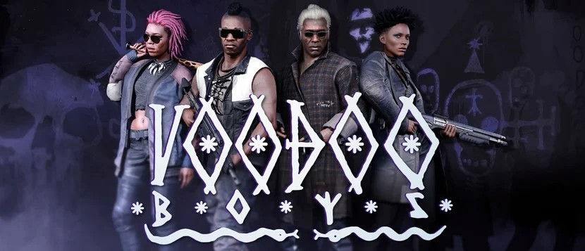
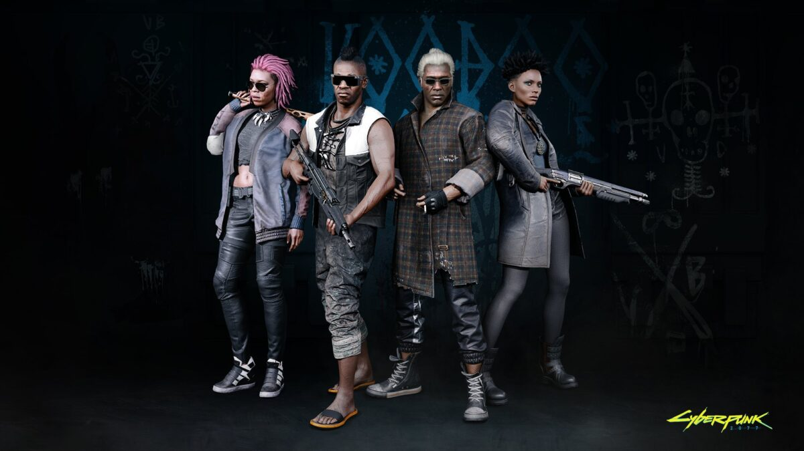

|  | |||||||||
| Anasayfa | Hayvanlar | Kaplan Pençeleri | Valentinolar | Voodoo Oğlanları | Maelstrom | Mox | 6. Cadde | Wraithler | Aldecaldolar |
|
Haiti'nin 2062 yılında iklim değişikliğinden ötürü yaşanamaz bir hale gelmesinden sonra birçok Haitili Night City'e yerleşti ve çok geçmeden kendi vatandaşlarını korumak ve desteklemek için Voodoo Oğlanları'nı (asıl hali ile Voodoo Boys) kurdular. Sayıca az oldukları için şehirde çok fazla gözükmezler. Ancak birçokları Ağgezer(Netrunner)'dır, şirketlerin veritabanlarına hack'lemek, sanal paraları çalmak gibi görevlerin yanısıra paralı asker olarak da iş yaparlar. Bu terörist bir uyuşturucu satıcıları çetesi. Tuhaf büyü ritüellerine katılıyorlar ve gençlere sentetik olmayan ilaçlar satıyorlar. Sadist ve acımasız, herhangi bir nedenle veya hiçbir sebep olmaksızın öldürebilir, işkence yaparlar. Güdüleri ve uygulamaları tutarlı değildir. Uyuşturucu satıcısı çetesi garip ritüellere katılmaları ile bilinmektedir. Sadist ve acımasızdırlar. Uygulamaları tutarlı değildir. Ağgezerleri ve mistik voodoo yöntemleri ile karanlık bir üne sahiplerdir. Tamamen Haitili üyelerden oluştuğu varsayılan Voodoo Oğlanları ayrıcalıklı, gizli ve yabancılara karşı güvensizdir. Başlangıçta Haiti diasporasının bir kültürünün önde gelen Vodoo rahip ve rahibelerinden oluşuyordu. 2062 yılındaki iklim değişikliği Haiti'yi haritadan sildi ve Voodoo Oğlanları'nın tarihinde yeni bir sayfa açtı. Dış görünüşlerinde genellikle dövmeler, küçük kuşların ve kemirgenlerin kafatası ya da kemiklerinin kullanıldığı Vodoo aromalı tılsımlar dış görünüşlerindeki ortak unsurlardır. Sabit karargahları veya çarpışma yastıkları yoktur. Her toplantının sonunda bir sonraki toplantının yeri ve saati seçilir. NCPD için şiddetli ve tehlikeli bir öncelik olarak kabul edilirler. Yerel tüccarlara yaptıkları baskı sebebiyle polis onları yakalamak için uygun koşulları sağlayamıyor. Çoğu zaman eski bir motorcu barı olan Hababas'ta bulunabilirler. Burası aynı zamanda ilaçlarının çoğunun satıldığı yerdir. 2077'de, Voodoo Boys, Pacifica'dan gelmiş esrarengiz bir çetedir, sadece Eski Ağ'ın ve Kara Duvar'ın arkasındaki sırları ortaya çıkarmaya adanmış ağ kurucuları değildir. Onlar aynı zamanda sınırlayıcıdırlar: kırılması gereken her kuralı çiğnemek ve sinir ağlarını dondurabilen virüsleri programlamak amaçlarıdır. Brigitte ve ikinci komutanı Placide tarafından yönetiliyorlar. Hayvanlar olarak bilinen bir Boostergang ile rekabet içindeler.
Pacifica'daki Creole diasporasının homojen doğası ve bölgedeki polis güçlerinin eksikliği nedeniyle, Voodoo Boys'un sayılarını, yapısını ve hatta hedeflerini belirlemek zordur. Çetenin Eski Ağ'ın sırlarını ortaya çıkarmaya kararlı olduğu yaygın olarak biliniyor ve bariyerin ötesindeki haydut akıllı sistemlerle bağlantı kurma umuduyla Blackwall'u araştırdıklarına inanılıyor. Bu girişimler, hileli netrunner'ları ve özbilinçli IS'leri izlemek ve göndermekle ilgilenen NetWatch'ın dikkatini ve düşmanlığını çekti. Voodoo Boys'un Pacifica'nın Haiti diasporasındaki gerçek vudu dini uygulamalarıyla ne ölçüde bağlantılı olduğu bilinmemektedir. Çetenin birincil gelir kaynağı, kısıtlanmış ve çok gizli verileri arayan çeşitli şirketlerdeki veri bankalarını ve hesapları hacklemeyi içerir. Özellikle IS'lerle iletişim konusunda NetWatch yasalarını ve düzenlemelerini ısrarla ihlal ediyorlar. Voodoo Boys, vur-kaç ağ çalıştırma operasyonları veya Eski Ağ'ın herhangi bir harap olmuş parçasını keşfetmekle ilgilenen özel müteahhitler için paralı ağ kurucuları olarak kendilerini işe alıyorlar. Diğer gelir kaynaklarının doğrulanması zordur, ancak sanal para hırsızlığı ve bilgi komisyonculuğu muhtemelen bunların arasındadır.  |